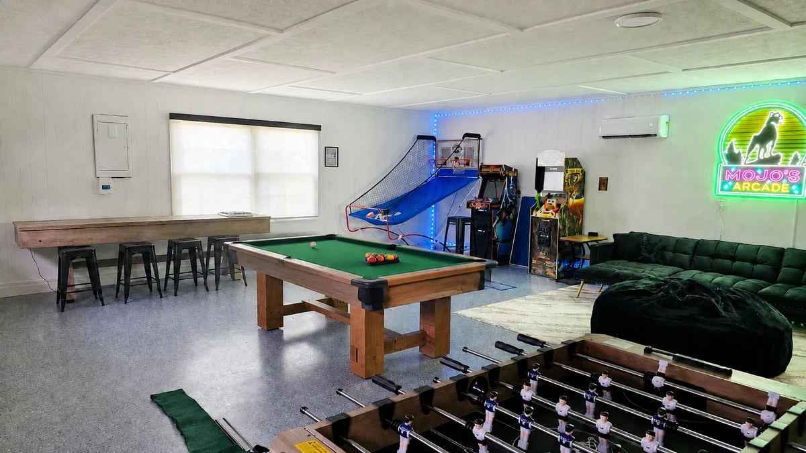

01DIGITALLY EDITED PHOTOYour own kind of nightlife.
Arcade basketball, retro games, pool, table tennis, foosball and shuffleboard. Your own game room, with a separate heating and cooling system for year-round play.
✳ YOUR WAYNESVILLE GETAWAY
A modern cabin house with a playful soul.
One mile from downtown. A world of good times at home.
Entire home · 4 bedrooms · up to 10 guests
Private hot tub, arcade & fenced backyard
ALL YOURS, ALL STAY.
4 bedrooms · up to 10 guests
 01 / A LITTLE MORE YOUA HOME WITH PERSONALITY
01 / A LITTLE MORE YOUA HOME WITH PERSONALITYTHE BEST OF BOTH WORLDS
Head out for a mountain day. Head into town for dinner. Come back to a home where the evening is its own adventure.
Two living rooms, a kitchen made for gathering, your own arcade and a backyard full of possibilities. Thoughtfully renovated. Wonderfully easy to settle into.
A LITTLE LOOK AROUND
From slow mornings on the porch to the arcade after dinner. Take a short photo tour of the rooms, the backyard and the good times waiting here.
Explore the property film ↗A STAY WITH ITS OWN RHYTHM

01DIGITALLY EDITED PHOTOArcade basketball, retro games, pool, table tennis, foosball and shuffleboard. Your own game room, with a separate heating and cooling system for year-round play.
 02
02Long breakfasts. Something good on the stove. A kitchen that brings everyone together.
The first good decision of the day?
Coffee at home.
WHEN THE DAY WINDS DOWN
 DIGITALLY EDITED PHOTO
DIGITALLY EDITED PHOTOBlue water. Warm lights.
Absolutely nowhere to be.
Edited from the actual property photo. Open water and jets are generated; the owner confirms blue lighting.
MAKE YOURSELF AT HOME
K-cup and drip coffee, a stocked kitchen, and a gas grill on the back deck. Settle into breakfast before deciding where the day goes.
Movie night, an electric fireplace, a karaoke encore. The family room opens onto the deck, with another living room when you want a quieter corner.
A three-hole putting green, bocce and cornhole court, disc golf, a hammock and a playset. Plenty of ways to spend an afternoon at home.
FOUR ROOMS. FOUR PERSONALITIES.
All four bedrooms are upstairs.
Up to 10 guests across the home.
King bed
Private ensuite with walk-in shower
King bed
Shared upstairs hall bathroom
Twin-over-double bunk
Mountain mural & LED lights
Queen bed
Vanity, art & a little golden glamour
The four upstairs bedrooms have two king beds, a queen and a twin-over-full bunk. A futon in the downstairs game room offers an additional sleeping option, with extra linens available. The maximum is ten guests across the home. The futon shares the game room rather than a separate bedroom; all full bathrooms are upstairs.
See the game-room futon ↗THE EVERYDAY DETAILS
2 full bathrooms upstairs.
1 half bath downstairs.
A private bathroom with a tiled walk-in shower.
Shared by the other upstairs bedrooms.
A convenient stop between the living spaces.
GOOD DOGS. GREAT VACATIONS.
Mojo would insist. Bring up to two dogs, with a fenced backyard, bowls and a dog bed waiting here. The pet fee is $100 per dog, per stay. Please include your dogs when booking.
 THE HOUSE. THE REAL SETTING.
THE HOUSE. THE REAL SETTING.IN TOWN. CLOSE TO IT ALL.
One mile from downtown Waynesville, in a residential neighborhood. Take the car into town for coffee, galleries, a brewery or a slow dinner. The mountains are your day trip; this is your home base.
FROM THE BLOG · WNC INSIDER
Local guides and thoughtful trip ideas, all with Waynesville as your home base.

Waterfalls & Day Trips
Find a waterfall outing for your next day beyond town.
Read the guide
Fall Foliage
Plan an autumn visit with ideas for scenic drives and mountain days.
Read the guide
Family Travel
Explore ideas for family days out, with the Manor waiting when it is time to unwind.
Read the guideTHE PART OUR GUESTS REMEMBER
★★★★★“She was kind and responsive! The house was beautiful, clean, and lots to do!”
★★★★★“The house was very homey and very spacious. The neighborhood was peaceful. Samantha was the sweetest host.”
★★★★★“My kids had a blast with all the things to do this wonderful house had to offer”
★★★★★“Absolutely stunning house and private fenced in yard with everything you can think of for amenities executed flawlessly with impeccable style!”
Mojo Manor is Jake and Samantha’s family vacation home. We love sharing its playful spaces with guests, and we’re a call or message away when you need a hand with your stay.
EASY TO PLAN. EASY TO SETTLE IN.

YOUR PEOPLE. YOUR PLANS. YOUR MANOR.
Choose your dates to see current availability,
your stay total and booking terms.
Mojo Manor is in a residential neighborhood in Waynesville, about one mile from downtown. It is a convenient home base for mountain adventures, with restaurants, shops and everyday essentials nearby. It is not a secluded mountaintop cabin.
Up to ten guests. Four upstairs bedrooms have two kings, one queen and a twin-over-full bunk, with an additional futon in the downstairs game room. Both full bathrooms are upstairs; a half bath is downstairs. All bedrooms require stairs.
Up to two dogs are welcome, with a $100 fee per dog per stay. We provide bowls, a dog bed and waste bags. Please include your dogs in the booking and follow the pet policy.
Linens, towels, toiletries, a stocked kitchen and coffee station, Wi-Fi, Smart TVs, washer and dryer, and the house’s indoor and outdoor games. Family equipment includes a pack-n-play, high chair and baby gate; confirm any specific needs before arrival.
Choose your dates in the booking window to see current availability and the stay total. Review the fee breakdown, pet charges and cancellation terms in the booking engine before confirming. Our Rates & Policies page has additional information.
Parties and events are not permitted. Quiet hours are 10 PM to 8 AM in this residential neighborhood. Keep outdoor music and conversation considerate of our neighbors.